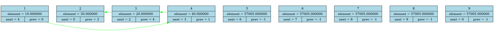
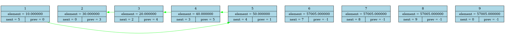

DUMP FROM src/main.cpp:10 at DumpToHtml()

DUMP FROM src/main.cpp:14 at DumpToHtml()

DUMP FROM src/main.cpp:17 at DumpToHtml()

DUMP FROM src/main.cpp:20 at DumpToHtml()

DUMP FROM src/main.cpp:23 at DumpToHtml()

DUMP FROM src/main.cpp:27 at DumpToHtml()

DUMP FROM src/main.cpp:30 at DumpToHtml()